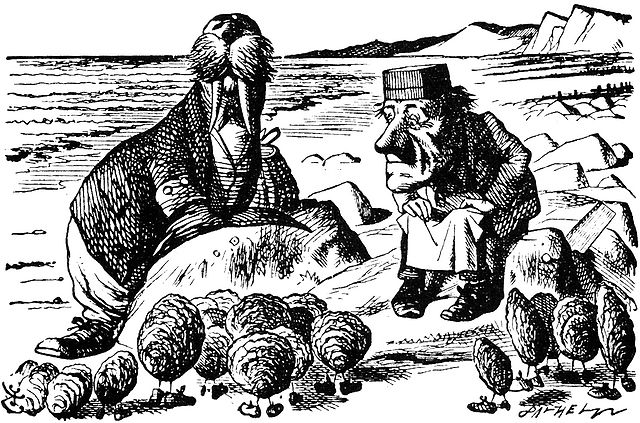
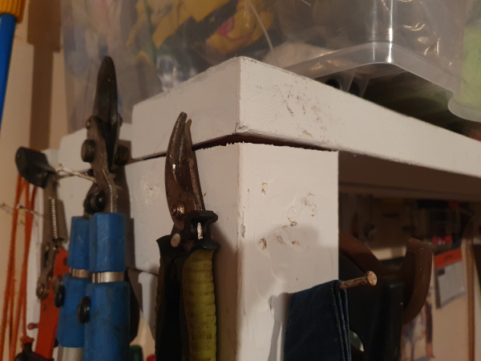
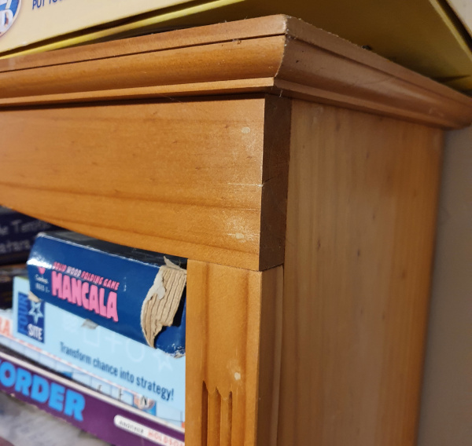

- Sun 18 September 2022
- Python
- Grant Paton-Simpson
- #python, #walrus operator
What has your experience of the Walrus operator been? Do you agree with this post? Do you disagree? Please comment below.
The Walrus and the Carpenter - Lewis Carroll
...
The Walrus and the Carpenter
Were walking close at hand;
They wept like anything to see
Such quantities of sand:
If this were only cleared away,'
They said, it would be grand!'
...
Lewis Carroll - Through the Looking Glass

The Walrus
The Walrus operator is an assignment expression. Normally we assign values to names with the syntax name = value e.g. fname = 'Zac'. The Walrus operator allows us to perform assignment as an inline expression within another statement. For example, instead of:
fname = 'Zac'
print(fname)
we can save a line by writing:
print(f_name := 'Zac')
The Software Carpenter
"Software Carpenter" in this post means a skilled Software Engineer - someone who understands the craft of software development1.
As an analogy I've built some very basic structures in my garage out of left-over pieces of timber.

They solve a practical need but would make a woodwork teacher cry. A skilled carpenter would build them much better.

In the software world, there is a similar distinction to be made between hacking together code and being a Software Carpenter.
A Software Carpenter will care about the following:
Readability and Maintainability
Apart from throwaway code we need to care about readability and maintainability. In addition to unit testing and type hinting the best way of preventing bugs is to make code easily intelligible. This is especially important in projects which run for a long time and involve lots of different coders. And if code is mission critical or "enterprise" then it is especially important that code is written with readability as a high priority.
Clever Coder not "Clever" Code
Writing the simplest, most readable code possible is not easy. But that is the goal for a Software Carpenter. It can be fun to make the most dense, cryptic code possible - see Code Golf. But we should never do this in production code i.e. code that matters. "Clever" code is a breeding ground for bugs.
Walrus Examples - Simple, Readable Code?
I recently asked for example code that demonstrated the value of the Walrus operator. The following was received:
if ( transaction_type := retrieve( transaction ).type ) == "balance":
show_balance()
elif transaction_type == "deposit":
add_balance()
elif transaction_type == "withdrawal":
decrease_balance()
else:
raise TransactionException( transaction_type...doesn't make sense )
But avoiding the Walrus operator only adds one line (as was acknowledged up-front by the contributor) - namely:
transaction_type = retrieve( transaction ).type
Using Python without the Walrus operator also simplifies the first condition clause. Instead of:
if ( transaction_type := retrieve( transaction ).type ) == "balance":
we have:
if transaction_type == "balance":
So not a very compelling use case there.
Another example was discussed in Walrus Hunting with StrEnum. In that case StrEnum seems a better solution. The person suggesting the code agreed but said the example helped the Walrus operator click for them. Fair enough, but the search for a genuinely useful use case continues.
Another developer suggested a good use case for the Walrus operator was2:
filtered_list = [res for item in items if (res := slow(item))]
which seemed more persuasive. The slow function is only called once per item. The non-Walrus, non-comprehension alternative is:
filtered_list = []
for item in items:
res = slow(item)
if res:
filtered_list.append(res)
which I have mixed feelings about. It is a lot longer. But its meaning is so plain it is less likely to contain bugs.
In balance, perhaps, a Walrus operator is a good option in such a case. It is both elegant and efficient. This use case is arguably the most persuasive of those presented in Should You Be Using Python’s Walrus Operator? (Yes. And Here’s Why).
But is a single use case of uncertain value enough to recommend teaching the Walrus operator to beginners? PHP is a language which has blended assignment and evaluation with often mind-boggling results - it is arguably a warning against this sort of "cleverness". Even an article promoting use of the Walrus operator (Should You Be Using Python’s Walrus Operator? (Yes. And Here’s Why)) acknowledges that the Walrus operator can be abused and it provides a useful section on "Gotchas and Limitations". If we want to shrink Common Python then tightly restricting the use of the Walrus operator is probably a good idea. Maybe it should be in Situational Python with a recommendation to limit usage to comprehensions.
Current Verdict
Until some compelling use cases for the Walrus appear we should probably discourage its widespread use in a When of Python. Mixing assignment and evaluation is a risky exercise and it would be better to invest energy understanding other safer and more useful language features or patterns instead. The one exception might be the use of the operator to avoid calling functions twice in comprehensions. The risks of this usage might be diminished if it became an idiomatic option (much the same way we often use lambdas when sorting). But generally speaking it might be best if Software Carpenters minimise contact with the Walrus:
...
It seems a shame,' the Walrus said,
To play them such a trick,
After we've brought them out so far,
And made them trot so quick!'
...
- Apologies if this is confusing to anyone. I am aware that the emphasis in Software Carpentry is on more basic skills but the Lewis Carroll reference was too good to pass up. ↩
- I altered the example to avoid using the keywoprd
listas a variable name as in the original example ↩